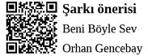

Profesyonel Pozitifler
Profesyonel hayatın bünyede derin yaralar açan tüm darbelerine rağmen dimdik ayakta kalıp, “Olsun be Necla Abla, en azından fönümüzü çektiriyoruz, pilli rimelimiz ile raks ediyoruz, iki happy hour yapıyoruz, arz-ı endam edip kurtlarımızı döküyoruz. Gerisinin koy eyeliner’ına rahvan gitsin” diyen profesyonellerdir. Kariyerleri doğal sınırlarına ulaşmış, yerinden kımıldamaya üşenen ve işten ayrılıp kendi küçük çöplüğünü kurma hayalinden de bir hobi olarak asla vazgeçemeyenlerdir.
Profesyonel Mükemmeliyetçiler
Profesyonel hayatın kaotik salınımlarına rağmen duruşunu bozmadan; süreçler ve kurallar tarafından yönlendirilen, başarıya ulaştıklarında kullanmış oldukları üslup ve yordam yüzünden sevgi ve onaydan yoksun kalan, işleri erteleyerek zamanında bitiremeyen, başarı veya başarısızlık korkusu ile bezenmiş hayatlarında yoğun kaygı ve stres altında yaşayan, yaşamı erteleyen, bünyelerini hedeflerine göre hep geride bırakan, hayatı ıskalayan profesyonellerdir.
Profesyonel Paranoyaklar
Profesyonel hayatın hata kabul etmeyen rekabetçi düzleminde; mail atarken 28 kere kontrol edip: “Doğru kimselere gönderiyor muyum? TO, CC mevzilerine doğru dağılımı gerçekleştirdim mi?, BCC’ye koyduğum adam mallık edip reply-to-all yaparsa ne halt ederiz?, ‘Konu ile ilgili ivedi aksiyonunuzu bekliyorum’ söylemi çok mu nazik oldu? Herkesin bilmediği birkaç İngilizce phrase kullansam beni yetenek olarak görürler mi?” gibi sonsuz sorular soran, mail’i gönderdikten sonra tekrar okuyan ve mail dağıtım listesindeki en kıdemsiz adamı arayıp “Mail’im geldi mi?” diye soran, şirket bünyesinde herhangi bir tasarruf politikası gündeme geldiğinde hemen kendisinin kapı önüne konulacağını düşünen, şirket tuvaletine girdikten sonra bir saat temizlemekle uğraşıp “Ya amirim gelirse ve herif hayvan gibi sıçmış, bırakmış gitmiş derse” diye kaygılanan, çalışma arkadaşlarının her öğle yemeğinde bir araya gelerek kendisi hakkında olumsuz konuştuğunu ve aksiyon planı yaptığını düşünen, toplantıda ortaya yapılan her yorumu kendi üzerine alan, terfi aldığında “Kesin beni kovmak istiyorlar, bu pozisyonda patlamamı istedikleri için terfi ettirdiler. Önce besleyip sonra kesecekler” yaklaşımında olan, teorik olarak zeki ama pratikte hasta diye bilinen profesyonellerdir.
Profesyonel Kötüler
Profesyonel ortamdaki fitne, fesat ve tüm kötülüklerin tohumlarını itina ile eken, nakış işler gibi yeşerten ve yayılımı için ellerinden geleni ardına koymayan, ortamdaki tüm profesyonellerin zaaflarına hâkim olan ve doğru zamanda, doğru kişilere, doğru potansiyel kriz kıvılcımlarını çakan, akabinde mentollü ince sigarasını yakıp, kahvesini söyleyip kriz yayılımını, kaosu, kavgaları, küslükleri keyifle izleyen, sürecin sonunda masum bir çalışan olarak mağdurların her şeyden habersiz omuzunda ağladığı, dertleştiği, görüşüne başvurulan değerli profesyonellerdir. Hayatın cilvesi, herkes gider bunlar kalır...
Alkışlarla Yaşayan Profesyoneller
Profesyonel ortamın suni olarak salgıladığı alkış hormonu ile beslenen, “Aferin” ile nefes alıp veren, “Halledersin güzelim!” dendiğinde koca plazayı sırtına almaya çalışan ve bu doğrultuda ekibinin ciğerlerine su toplatan, sürekli havalı sunumlar yapan, her aktiviteye gönüllü katılan ve katıldığı her aktiviteyi yönlendiren, her etkinlikte en özgün soruları sorma çabasında olan, üst yönetimin kokusunu 22 km’den alıp hemen yanlarında biten ve 27 saniyede tüm başarılarını anlatan, herkese yalandan hal hatır soran ve herkesle selamlaşan, insanların algısında “Yaa Pelinsu ne tatlı kız, ne kadar sosyal, herkese değer veriyor, herkesin halini hatrını soruyor. Ne kadar da down to earth” imajını oluşturmak derdinde olan, herhangi bir iş veya süreçte patlaması ihtimali söz konusu olduğunda mutlaka faturanın kesileceği kişiyi aday gösterip süreçten profesyonelce sıyrılan, filmin son sahnesinde her daim alkışları toplayan ancak hayatı boyunca etrafındaki kartvizit bağımlı suni kalabalıkların arasında yalnızlığı ile yüzleşecek olan profesyonellerdir.
Profesyonel Kaşarlar
Profesyonel ortamın dikenli yollarında; dikensiz ve kestirme yollardan giderek tek hedefi yükselmek, cüzdan payını genişletmek, refah düzeyini korumak ve / veya arttırmak olan; bu ulvi hedef doğrultusunda stratejik ilişki geliştiren, talep yaratan ve hedefine ulaşana kadar talebi itina ile karşılayan, hayatına giren çıkan erkek / kadın sayısını bilmeyen, karşı cinsi burnunu iyice sürtene kadar, zeki taktiklerle süründüren, karşı tarafı Pavlov’un köpeği gibi güdüleyip güdüleyip bırakan, sosyal medyada paylaştığı fotoğraflarında her daim insanın sadece sevişirken veya sevişmeden önce takınabileceği bakışlar, surat ifadeleri ve alımlı vücutları ile yer alan, zorlama şuh kahkahalar atan ve her ortamda rahatlıkla cinsel deneyimlerinden bahsedebilen erkek veya kadın profesyonellerdir.
Profesyonel Ergenler
Profesyonel hayatın ciddi akışında yaşına rağmen ergen seviyesini koruyan, içten yanmalı motor gibi sürekli espriler, şakalar, komiklikler, fırlamalıklar yapan, yaşadığı sıra dışı deneyimleri fütursuzca mevki bağımsız herkesin ortasında paylaşan, mesai arkadaşlarına sürekli komik, cinsel içerikli fıkra, video gönderen, insanların gözünde “Ulan bizim Tonguç ne piç çocuk yaaa! Harbiden böylesini görmedim. Geçenlerde yine...” algısını oluşturmak isteyen enerjik profesyonellerdir. Bu algı bir kez yerleştikten sonra Ctrl + Z ile geri alması mümkün olmamaktadır.
Profesyonel Mütevazılar
Profesyonel rekabetçi ortamda, kendisine tevdi edilen görevi itina ile yapan, etkin ve kaliteli bir takım oyuncusu olan, sadece işini zamanında ve nitelikli bir şekilde yapmak ile ilgilenen, dedikoduya girmeyen, işi ve çalışma arkadaşları ile romantik bir ilişki kuran ama bunu tarif edemeyen, yaptığı işi gösteremeyen, sürekli birileri tarafından yönlendirilen, amiri “aferin” aldığı zaman mutlu olan, herkese her süreçte yardım eden, profesyonel kadrajda önplanda gözükmek yerine mutfakta ortalığı toplamaya kendini adamış mütevazı profesyonellerdir.
Profesyonel Yancılar
Profesyonel ortamın tartışmasız kazananlarının yanında yer alan, sürekli kazananlardan ve başarılarından bahseden, kazananların emrinden çıkmayan, sadakatinde şüpheye yer bırakmayan, “Gün gelecek biz de gelecez oralara...” motivasyonu ile kazananlar adına logaritmik cetveli ezberleyen, sifonu çeken, mail’in gönder tuşuna basan, kapısını açan, hapşırdığında mendil uzatan, rimelin akmış diyen, sürekli yancıladıkları tiplere, kıyafetlerine, makyaj ve bakımlarına methiyeler dizen profesyonellerdir.
Profesyonel Muhalifler
Profesyonel hayatın tartışmaya açık olmayan politika ve süreçlerine sürekli meydan okuyan, her sürece, her politikaya, her aktiviteye, her yaklaşıma profesyonel olarak muhalif duruş sergileyen, sürdürülebilir itiraz mekanizması olan, itiraz etmekten aksiyon alamayan, deveyi gütmeyen ama aynı zamanda diyarı da terk etmeyen “Beni nasılsa gönderecekler, bari duruşumu bozmayayım” düsturunu kendine şiar edinen alternatif profesyonellerdir.
Profesyonel Sanal Karakterler
Profesyonel hayatın renkli ve hızlı akışında renksiz ve dikkat çekmeden nefes almayı bilen, gündüzleri Mr. Anderson kimliği ile sadece işi ile ilgilenen başarılı bir profesyonel iken geceleri Neo kimliği ile iş yerindekilerin hayal bile edemediği bir dünyayı yaşayan ve bu iki dünyayı da başarılı bir şekilde aynı bünyede barındıran profesyonellerdir. Bordrodan emekli oldukları pek görülmemiştir. Günün birinde donanma gemisinden inecekleri anı ve demirleyecekleri limanı hayal ederek yaşarlar.